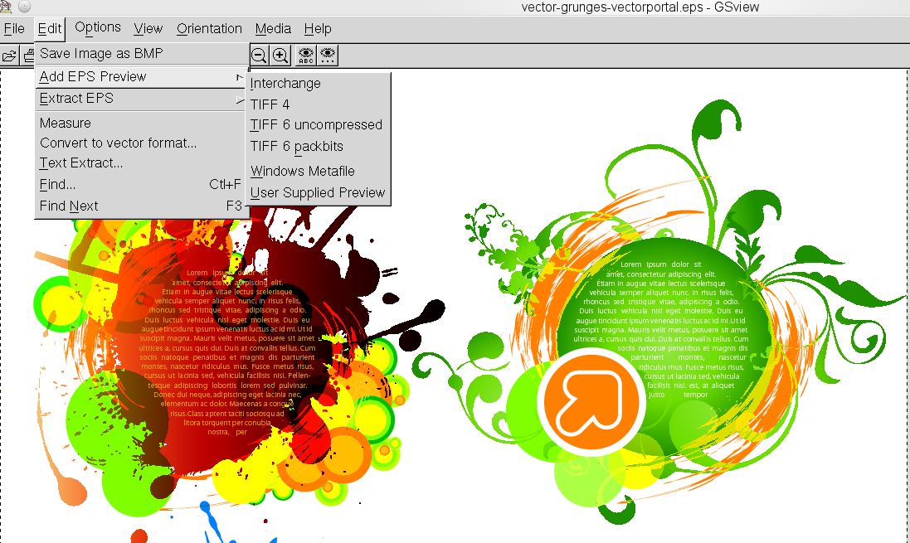

È importante notare che GSview non deve essere confuso con ghostview, gv e i loro derivati! Anche se Adobe Reader spesso è migliore come visualizzatore puro per documenti PDF, GSview dovrebbe essere considerato uno degli strumenti essenziali per l'uso con Scribus. GSview comprende alcune funzioni estremamente utili. Per coloro che non conoscono il programma, diciamo che fornisce un'interfaccia di facile uso per Ghostscript e per pstoedit, per la conversione di file bitmap in file vettoriali e viceversa. Per coloro che hanno un'esperienza di DTP tradizionale in ambiente Mac/Windows, fornisce anche alcune delle funzionalità di Adobe Acrobat.
Dovreste sempre usare la versione più recente, almeno la 4.7. (GSview fu originariamente sviluppato in ambiente Windows, e ha raggiunto una qualità eccellente fin dalle versioni 4.x.)
Per l'uso con Scribus, GSview offre le seguenti funzionalità:
|  |
Un esempio di una situazione in cui GSview è molto utile con Scribus è l'individuazione e la correzione di errori presenti in file EPS che non vengono visualizzati correttamente in Scribus. Molte applicazioni sono in grado di generare file EPS, ma alcune vi aggiungono delle caratteristiche insolite che possono causare problemi quando questi file sono utilizzati in altri programmi (come Scribus).
Quindi, se incontrate difficoltà con un file EPS che desiderate utilizzare in Scribus, apritelo in GSview. Poi usate il comando da tastiera M per visualizzare i messaggi emessi da Ghostscript: questi messaggi possono indicare i problemi che causano errori di visualizzazione o stampa. Potete inoltre usare la ‘periferica’ epswrite da GSview per salvare nuovamente l'EPS, operazione che può aiutare a eliminare o correggere errori in un file EPS.
Potete anche rasterizzare un'immagine EPS, convertendola in PNG o TIFF e poi ridimensionarla, correggere i colori, e così via, con programmi di grafica come GIMP o Krita.
GSview utilizza la libreria condivisa libgs.so per accedere a Ghostscript. Non tutte le distribuzioni Linux la comprendono; in queste situazioni dovreste seguire i consigli per compilare Ghostscript con un'installazione parallela.
GSview è disponibile per la maggior parte delle distribuzioni Linux, almeno per le maggiori. Altrimenti potete compilarlo seguendo le istruzioni contenute nel pacchetto del codice sorgente. Per Windows, OS/2 ed eComStation potete scaricare i normali programmi di installazione. Purtroppo non è disponibile alcuna versione attuale per Mac OS X.
Una nota speciale per gli utenti di OpenSUSE: a partire dalla versione 11.3, le librerie GTK 1, che sono necessarie, non sono più disponibili per questa distribuzione, ma potete servirvi delle versioni che si trovano nel repository OpenSUSE Factory. Dovete installare i pacchetti gtk-1.20 e glib (e se volete compilare direttamente GSview, anche i rispettivi pacchetti RPM devel), e inoltre il pacchetto linguistico che si trova nella directory “noarch”.
Per suggerimenti avanzati su GSview e Ghostscript, vedere Ghostscript avanzato & GSView.
*) Per il contenuto di questa pagina ringraziamo Russell Lang, autore e sviluppatore di GSview, epstool e Ghostscript, per i suggerimenti e le pazienti risposte ai quesiti su GSview e Ghostscript.